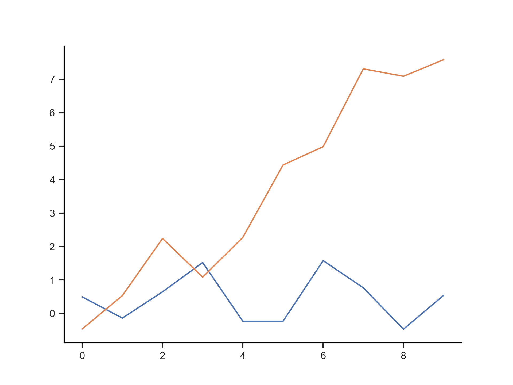

2021-03-04
View online: https://github.com/wfondrie/slides
Coming from R, I learned Python by translating a simple R package to Python.
I keep useful things in my personal wispy package.
https://github.com/wfondrie/wispy
For a talk:
import numpy as np
import matplotlib.pyplot as plt
from wispy import theme
pal = theme.talk(dark=True)
np.random.seed(42)
plt.figure()
plt.plot(np.random.randn(10))
plt.plot(np.random.randn(10) + np.arange(10))
plt.show()

I keep useful things in my personal wispy package.
https://github.com/wfondrie/wispy
For a paper:
import numpy as np
import matplotlib.pyplot as plt
from wispy import theme
pal = theme.paper()
np.random.seed(42)
plt.figure()
plt.plot(np.random.randn(10))
plt.plot(np.random.randn(10) + np.arange(10))
plt.show()
I keep useful things in my personal wispy package.
https://github.com/wfondrie/wispy
For a paper:
import numpy as np
import matplotlib.pyplot as plt
from wispy import theme
pal = theme.paper()
np.random.seed(42)
plt.figure()
plt.plot(np.random.randn(10))
plt.plot(np.random.randn(10) + np.arange(10))
plt.show()

Install with pip or conda:
# With conda:
conda install -c bioconda mokapot
# With pip:
pip install mokapot
It will provide random inspirational messages on demand (for error and progress messages):
import inspired
try:
assert 1 == 2
except AssertionError:
raise AssertionError(inspired.by_yoda())
# AssertionError: Do or do not. There is no try.
A package is little more than a collection of python scripts:
inspired |- LICENSE |- README.md |- inspired | |- __init__.py | |- yoda.py | `- (*.py files for other messages) |- pyproject.toml |- setup.cfg `- setup.py
We’ll keep ours simple:
# inspired Effortlessly inject inspirational messages into your Python code.
The MIT License is short and to the point. It lets people do almost anything they want with your project, like making and distributing closed source versions.
For our basic package, our pyproject.toml is:
[build-system]
requires = [
"setuptools>=42",
"wheel"
]
build-backend = "setuptools.build_meta"
setup.py is the legacy way to define what we did in pyproject.toml and setup.cfg.
However, it is needed to create editable installs, which are super useful!
pip install -e .
Ours will be:
import setuptools
setuptools.setup()
__init__.py tells Python that a directory is a package__init__.py are easily available to users.__init__.py can be empty.
Ours will be:
from .yoda import by_yoda
by_yoda() function in yoda.py__init__.py are
Others can be reached through their respective modules.
import os
os.path.isfile("blah.txt")
Sphinx can generate documentation automatically from your Python docstrings!
def add(x, y):
"""Add x and y.
Calculate a simple sum between two numbers.
Parameters
----------
x : float
The first number to add.
y : float
The second number to add.
Returns
-------
float
The sum of x and y.
"""
return x + y